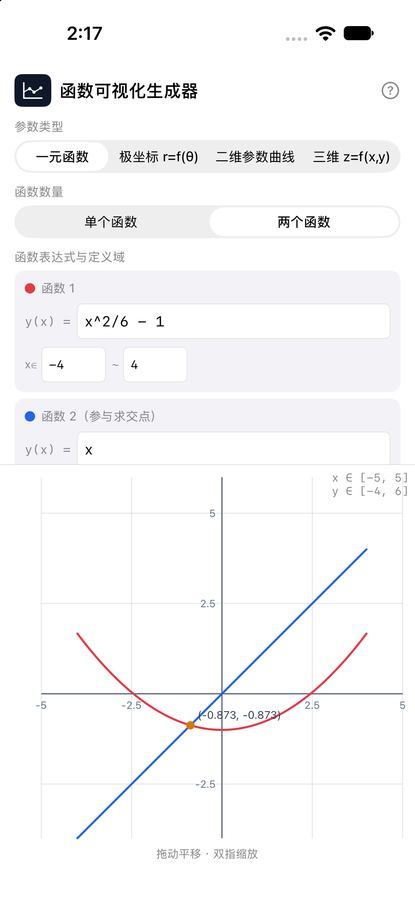
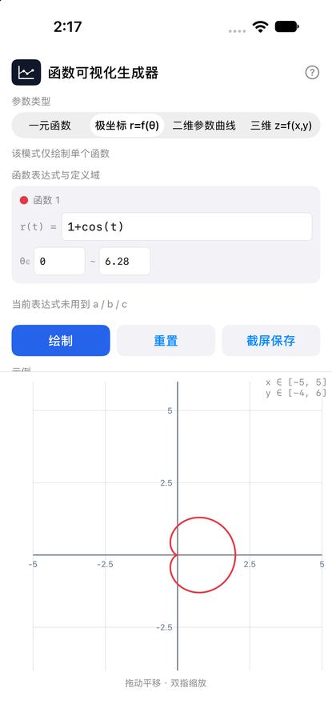
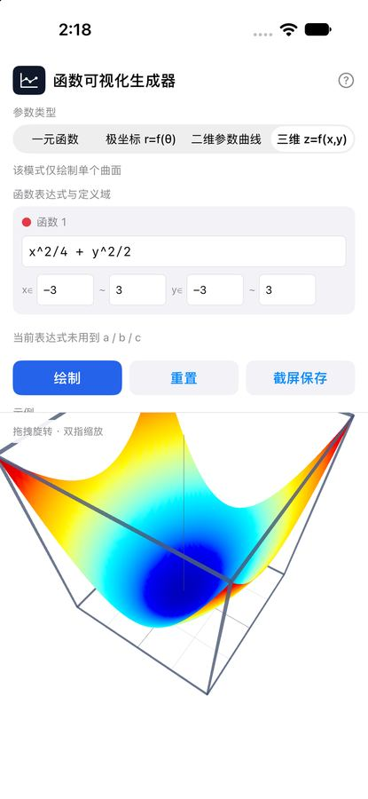

「函数可视化生成器」技术支持
Function Visualizer · Support · 更新日期：2026 年 11 月 12 日
「函数可视化生成器」（Function Visualizer）是一款完全离线的数学绘图工具，支持一元函数、极坐标、参数曲线与三维曲面四种模式，所有计算都在你的设备本地完成。
Productivity · Math Graphing
iPhone / iPad
中英日三语
完全免费 · 无内购无广告



在 App Store 下载 / Download on the App Store
本应用完全免费：没有 App 内购买项目、没有订阅、没有广告，也没有试用期限或付费墙，所有功能对所有用户开放。
常见问题
1. 绘图没有出现 / 曲线是空白的
- 请确认表达式使用的是应用支持的写法，例如
sin(x)、x^2、1/x；
- 检查当前定义域是否把曲线排除在外，尝试把定义域扩大到 -10 至 10；
- 三维曲面需要 x、y 两个自变量，例如
sin(x)*cos(y)。
2. 交点为什么没有标注出来
- 交点只在「一元函数」模式下、且图中确实有两条及以上曲线时才会求解；
- 切点（重根）与超出当前定义域的交点不会被标注。
3. 截图保存在哪里
- 点击「截屏保存」后，图像会写入系统「照片」App；首次使用时需要允许相册写入权限；
- 如果误点了「不允许」，可到 设置 → 隐私与安全性 → 照片 → 函数可视化生成器 中重新开启。
4. 参数滑块 a / b / c / d 怎么用
在函数表达式中直接写 a、b、c、d（例如 a*sin(b*x)），拖动控制面板下方的滑块即可实时改变参数并观察曲线变化。
5. 数据与隐私
应用不收集任何个人数据，不联网、无统计组件。详细说明请见 隐私政策。
反馈与联系
遇到问题、想提需求，或希望支持更多语言，欢迎通过邮箱联系开发者：
Function Visualizer — Support
Updated November 12, 2026
Function Visualizer is a fully offline graphing tool for iPhone and iPad. It plots functions y=f(x), polar curves, parametric curves and 3D surfaces, and every calculation runs locally on your device.
The app is completely free: there is no in-app purchase, no subscription, no advertising, no trial limit and no paywall. All features are available to everyone.
Frequently asked questions
1. Nothing is plotted / the canvas is empty
- Check the expression syntax the app accepts, for example
sin(x), x^2 or 1/x;
- Widen the domain of the function, e.g. from -10 to 10, in case the curve falls outside the current range;
- 3D surfaces need both variables, for example
sin(x)*cos(y).
2. Why are no intersections labeled
- Intersections are solved only in the "functions" mode, when at least two curves are visible;
- Tangency points and intersections outside the current domain are not labeled.
3. Where are my screenshots saved
- Tapping the save button writes the plot into the system Photos app; the first time you do this iOS asks for add-only photo permission;
- If you tapped "Don't allow", re-enable it in Settings → Privacy & Security → Photos → Function Visualizer.
4. How do the a / b / c / d parameter sliders work
Type a, b, c or d directly into an expression, for example a*sin(b*x), then drag the sliders on the control panel to update the curve in real time.
5. Privacy
The app collects no personal data and does not access the network. See the Privacy Policy for details.
Contact
For bug reports, feature requests or localization help, please email the developer: